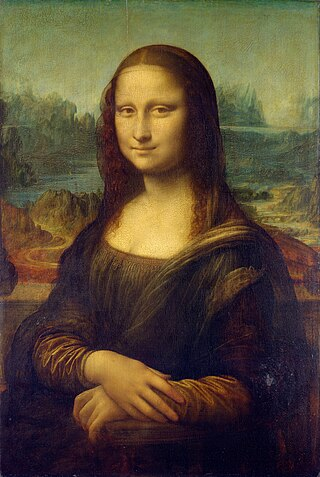

Мона Ліза (Леонардо да Вінчі)

Мона Ліза — одна з найвідоміших картин у світі, створена Леонардо да Вінчі у 16-му столітті. Ця картина захоплює своїм загадковим усміхом і дивовижними деталями, що продовжують вражати глядачів з усього світу. Зберігається в Луврі, Париж.